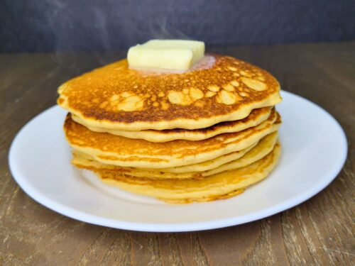

<!DOCTYPE html>
<html lang="en">

</html>
<head>
    <meta charset="UTF-8">
    <title>Pancakes Recipes</title>
</head>
<body>
<a href="../index.html">HOME</a>

<h1>Pancakes recipes</h1>


<p> <h2> Descriptions</h2> </p>
<p> Fluffy, golden pancakes perfect for breakfast, brunch, or snacks. Easy to make with basic ingredients and customizable with toppings like fruits, honey, or chocolate.</p>
<p><h3> Ingredients</h3></p>

<ul>
    <li>1 cup all-purpose flour</li>
    <li>2 tbsp sugar</li>
    <li>2 tsp baking powder</li>
    <li>1/4 tsp salt</li>
    <li>1 cup milk</li>
    <li>1 egg</li>
    <li>2 tbsp melted butter</li>
    <li>1 tsp vanilla extract</li>
</ul>
<p><h3>Steps</h3></p>

<ol> 
   <li>In a bowl, mix flour, sugar, baking powder, and salt.</li>
   <li>In another bowl, whisk milk, egg, melted butter, and vanilla.</li>
   <li>Combine wet and dry ingredients; mix gently (do not overmix).</li>
    <li>Heat a non-stick pan over medium heat, grease lightly.</li>
    <li>Pour 1/4 cup batter for each pancake.</li>
    <li>Cook until bubbles form, flip, and cook until golden.</li>
    <li>Serve with syrup, fruits, or honey.</li>


</ol>


</body>